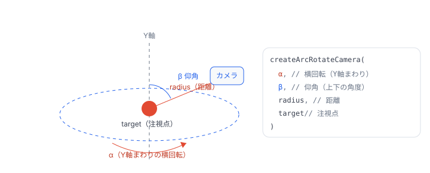

Babylon Lite とは
Babylon Lite は、BabylonJS チームが「白紙から」作り直した 3D レンダリングエンジンです。レガシーを持たず、最新の GPU API（WebGPU）の上に直接構築されています。
ねらいはただ一つ ——「Babylon.js とピクセル単位で同じ絵を、ごく一部のコードサイズで描く」こと。ツリーシェイク（使わない機能をバンドルから自動で取り除く仕組み）を徹底し、平均で約 19 倍小さいバンドル、3〜4 倍速いフレーム時間を実現しています。
Babylon.js クラスベース
- クラスと
newでオブジェクトを生成 - WebGL / WebGL2 / WebGPU すべてに対応
- 豊富な機能。フル機能なぶんバンドルは大きめ
- 作った時点でシーンに自動登録される
Babylon Lite 関数型・データ指向
- ファクトリ関数でプレーンなデータを生成
- WebGPU 専用（WebGL フォールバックなし）
- 使った機能だけをバンドル。極小サイズ
addToScene()で明示的にシーンへ登録
import した機能だけがバンドルに残り、使わない機能は自動で取り除かれます。だから Lite は小さくなります。Babylon.js を知らなくても大丈夫
このガイドは Babylon.js の経験を前提としません。ただし後半の「API 早見表」は、Babylon.js 経験者が Lite に移るときの対応表として使えます。
動作要件
Babylon Lite は WebGPU 専用です。WebGL への切り替え（フォールバック）はありません。まずはお使いのブラウザが WebGPU に対応しているか確認しましょう。
Chrome / Edge 113+
最も安定して動きます。加えて、新しめの Firefox・Safari でも動作します。学習用にはデスクトップ版 Chrome か Edge がおすすめです。
Lite Playground
ブラウザだけで書いて・動かして・共有できる公式エディタ。Node も npm も不要です。このページのサンプルはすべてここで動きます。
createEngine() がエラーになるとき
WebGPU が使えない環境では createEngine() が例外を投げます。ブラウザとバージョンを確認してください。プロジェクトに組み込む場合は npm install @babylonjs/lite と、Vite などの ESM バンドラが必要です。
まず押さえたい 4つの考え方
Babylon Lite は見た目こそ Babylon.js に似ていますが、いくつかの明確なルールの上に成り立っています。この 4つを頭に入れると、API 全体の挙動が予測できるようになります。
クラスではなく「データ」
カメラ・ライト・メッシュは、メソッドを持たないただのデータです。ファクトリ関数で作り、振る舞いは addToScene(scene, light) のような単独の関数が受け持ちます。だから未使用の関数はバンドルから丸ごと消せます。
シーンだけが所有者
ライトもメッシュもシーンを知りません。内容を知っているのはシーンだけ。部品を単独で作り、シーンに手渡します。シーンに入っていないものは描画されません。
明示的なライフサイクル
すべてのアプリが同じ 4段階をこの順で通ります —— 作成 → 追加 → 登録 → 開始。表示されないときの原因は、たいてい「登録の後で追加した」か「追加し忘れ」です。
使った分だけ
glTF 拡張・HDR・影といった機能はすべて独立モジュール。シーンが実際に必要とした瞬間だけ読み込まれます。管理は不要 —— 書きたいシーンを書けば、あとはバンドラが最適化します。
addToScene()（カメラは scene.camera=）でシーンに渡します。シーンに入っていないものは描画されません。作成 → 追加 → 登録 → 開始
Babylon Lite のすべてのアプリはこの流れに従います。特に 3 の「登録」はすべてを追加した後で一度だけ呼ぶのがポイントです。
addToScene() を済ませてから registerScene() → startEngine()。この順序を外すと「表示されない」原因になります。Playground の使い方
Lite Playground を開くと、左に TypeScript エディタ、右に WebGPU キャンバスが表示されます。コードを書いて Run（▶ ボタン、または Ctrl / Cmd + Enter）を押すと、その場で実行されます。
コードは実際のアプリと同じく、@babylonjs/lite から必要な関数を import し、renderCanvas という id のキャンバスを取得します。基本の骨組みは次のとおりです。
import { createEngine, createSceneContext /* …必要な関数… */ } from "@babylonjs/lite";
async function main() {
const canvas = document.getElementById("renderCanvas") as HTMLCanvasElement;
const engine = await createEngine(canvas);
const scene = createSceneContext(engine);
// …ここでシーンを組み立てる…
await registerScene(scene); // すべて追加した後で
await startEngine(engine); // 描画ループ開始
}
main().catch((err) => console.error(err));使い方のコツ
Examples ドロップダウンから完成済みのシーンを読み込み、少しずつ書き換えて Run —— これが API を覚える一番の近道です。Save（フロッピーアイコン）でパーマリンクが作られ、そのまま共有できます。
Playground はこれだけできる
エディタ上部のタブで複数ファイルに分割でき、import { ... } from "./scene" のような相対 import が使えます。@babylonjs/lite 以外の npm パッケージも import するだけで自動解決（esm.sh 経由）。Engine version ドロップダウンで nightly と公開リリースを切り替えられ、Download でプロジェクト一式を実行可能な zip として書き出せます。なお Playground はベータ版のため、細部は今後変わる可能性があります（公式 Playground ガイド）。
サンプルコード集
ここからは Lite Playground にそのまま貼り付けて動く 4つのサンプルです。上から順に、少しずつ要素を足していきます。各コードは右上の「コピー」でコピーできます。
最初のサンプルで使う createArcRotateCamera(α, β, radius, target) は、注視点（target）のまわりをカメラが回るタイプのカメラです。4つの引数の意味は次の図のとおりです。

createArcRotateCamera(-Math.PI/2, Math.PI/2.5, 4, {x:0,y:0,z:0}) は「原点を中心に、距離 4 の位置から少し見下ろす」カメラです。実行後、マウスのドラッグで α・β が変化します。最初のシーン —— 赤い球を描く
エンジン・カメラ・ライト・球という最小構成です。マウスでドラッグすると、カメラが球のまわりを回ります（attachControl の効果）。
import {
createEngine, createSceneContext, createArcRotateCamera, attachControl,
createHemisphericLight, createSphere, createPbrMaterial,
addToScene, registerScene, startEngine,
} from "@babylonjs/lite";
async function main() {
const canvas = document.getElementById("renderCanvas") as HTMLCanvasElement;
// 1. エンジン（GPU デバイスを取得）
const engine = await createEngine(canvas);
// 2. シーン
const scene = createSceneContext(engine);
// カメラ：ターゲットの周りを回る ArcRotateCamera
// 引数は (alpha 回転, beta 仰角, radius 距離, target 注視点)
const camera = createArcRotateCamera(-Math.PI / 2, Math.PI / 2.5, 4, { x: 0, y: 0, z: 0 });
scene.camera = camera;
attachControl(camera, canvas, scene); // マウス操作を有効化
// ライト（真上からの半球ライト、強さ 1.0）
addToScene(scene, createHemisphericLight([0, 1, 0], 1.0));
// 球 ＋ PBR マテリアル（赤・少しつや消し）
const sphere = createSphere(engine, { segments: 16, diameter: 2 });
sphere.material = createPbrMaterial({ baseColorFactor: [0.9, 0.1, 0.1, 1], metallicFactor: 0.1, roughnessFactor: 0.4 });
addToScene(scene, sphere);
// 3. 登録（すべて追加した後で）
await registerScene(scene);
// 4. 描画ループ開始
await startEngine(engine);
}
main().catch((err) => console.error(err));アニメーション —— 箱を回す
毎フレーム呼ばれる onBeforeRender を使って回転させます。コールバックの引数 deltaMs は前フレームからの経過ミリ秒。これを使うと、フレームレートに依存しない滑らかな動きになります。
import {
createEngine, createSceneContext, createArcRotateCamera, attachControl,
createHemisphericLight, createDirectionalLight, createBox, createStandardMaterial,
addToScene, onBeforeRender, registerScene, startEngine,
} from "@babylonjs/lite";
async function main() {
const canvas = document.getElementById("renderCanvas") as HTMLCanvasElement;
const engine = await createEngine(canvas);
const scene = createSceneContext(engine);
const camera = createArcRotateCamera(-Math.PI / 2, Math.PI / 2.5, 6, { x: 0, y: 0, z: 0 });
scene.camera = camera;
attachControl(camera, canvas, scene);
// やわらかい環境光＋方向性ライトで立体感を出す
addToScene(scene, createHemisphericLight([0, 1, 0], 0.7));
addToScene(scene, createDirectionalLight([-1, -2, -1], 1.0));
// 箱＋標準マテリアル（青）
const box = createBox(engine);
const mat = createStandardMaterial();
mat.diffuseColor = [0.2, 0.6, 1.0]; // [R, G, B]（0〜1）
box.material = mat;
addToScene(scene, box);
// 毎フレーム、経過時間ぶんだけ回転させる
let angle = 0;
onBeforeRender(scene, (deltaMs) => {
angle += deltaMs * 0.001;
box.rotation.set(angle * 0.5, angle, 0); // (x, y, z) ラジアン
});
await registerScene(scene);
await startEngine(engine);
}
main().catch((err) => console.error(err));複数のオブジェクトと地面
position.set(x, y, z) で配置を変えられます。地面（createGround）の上に、球と箱を左右に並べます。それぞれ別のマテリアルで色分けしています。
import {
createEngine, createSceneContext, createArcRotateCamera, attachControl,
createHemisphericLight, createDirectionalLight,
createSphere, createBox, createGround, createStandardMaterial,
addToScene, registerScene, startEngine,
} from "@babylonjs/lite";
async function main() {
const canvas = document.getElementById("renderCanvas") as HTMLCanvasElement;
const engine = await createEngine(canvas);
const scene = createSceneContext(engine);
const camera = createArcRotateCamera(-Math.PI / 2.2, Math.PI / 3, 10, { x: 0, y: 0.5, z: 0 });
scene.camera = camera;
attachControl(camera, canvas, scene);
addToScene(scene, createHemisphericLight([0, 1, 0], 0.6));
addToScene(scene, createDirectionalLight([-1, -2, -1], 1.2));
// 地面（12 × 12）
const ground = createGround(engine, { width: 12, height: 12 });
const groundMat = createStandardMaterial();
groundMat.diffuseColor = [0.30, 0.34, 0.32];
ground.material = groundMat;
addToScene(scene, ground);
// 球（左に配置・赤）
const sphere = createSphere(engine, { diameter: 2 });
sphere.position.set(-2, 1, 0);
const red = createStandardMaterial();
red.diffuseColor = [0.9, 0.25, 0.2];
sphere.material = red;
addToScene(scene, sphere);
// 箱（右に配置・青）
const box = createBox(engine);
box.position.set(2, 0.5, 0);
const blue = createStandardMaterial();
blue.diffuseColor = [0.2, 0.45, 0.9];
box.material = blue;
addToScene(scene, box);
await registerScene(scene);
await startEngine(engine);
}
main().catch((err) => console.error(err));3Dモデルと環境光（IBL）を読み込む
実務でよくある構成です。loadGltf で glTF/GLB モデルを、loadEnvironment で画像ベースの環境光（IBL）とスカイボックスを読み込みます。createDefaultCamera がモデルに合わせてカメラを自動調整してくれます。
import {
createEngine, createSceneContext, createDefaultCamera, attachControl,
createHemisphericLight, loadGltf, loadEnvironment,
addToScene, registerScene, startEngine,
} from "@babylonjs/lite";
async function main() {
const canvas = document.getElementById("renderCanvas") as HTMLCanvasElement;
const engine = await createEngine(canvas);
const scene = createSceneContext(engine);
addToScene(scene, createHemisphericLight([0, 1, 0], 1.0));
// glTF モデルを読み込む（addToScene が階層・メッシュ・アニメーションを登録）
addToScene(scene, await loadGltf(engine, "https://playground.babylonjs.com/scenes/BoomBox.glb"));
// 画像ベースの環境光（IBL）＋ スカイボックス＋ 地面
await loadEnvironment(scene, "https://assets.babylonjs.com/core/environments/environmentSpecular.env", {
brdfUrl: "/brdf-lut.png", // BRDF LUT は必須。Playground がこのパスで配信している
skyboxUrl: "https://assets.babylonjs.com/core/environments/backgroundSkybox.dds",
skyboxSize: 1000,
});
// 読み込んだモデルに合わせてカメラを自動フレーミング
const camera = createDefaultCamera(scene);
attachControl(camera, canvas, scene);
await registerScene(scene);
await startEngine(engine);
}
main().catch((err) => console.error(err));アセットは絶対 URL で
モデルや環境テクスチャは https://… の絶対 URL で参照すると、Playground でもダウンロード後でも同じように解決されます。上の例は Babylon 公式が配布しているサンプルアセットです。
Babylon.js → Lite 早見表
Babylon.js 経験者向けの対応表です。共通する考え方は「new クラス(...) がファクトリ関数に、Vector3 / Color3 がただの配列に」なる、というものです。
| やりたいこと | Babylon.js | Babylon Lite |
|---|---|---|
| エンジン生成 | new WebGPUEngine(canvas) | await createEngine(canvas) |
| シーン生成 | new Scene(engine) | createSceneContext(engine) |
| 描画ループ | engine.runRenderLoop(...) | await startEngine(engine) |
| 周回カメラ | new ArcRotateCamera(...) | createArcRotateCamera(α, β, r, target) |
| カメラ操作 | camera.attachControl(canvas) | attachControl(camera, canvas, scene) |
| 半球ライト | new HemisphericLight(...) | createHemisphericLight([0,1,0], 1.0) |
| 方向性ライト | new DirectionalLight(...) | createDirectionalLight([0,-1,0]) |
| 球 / 箱 / 地面 | MeshBuilder.CreateSphere(...) | createSphere(engine) / createBox(engine) |
| 標準マテリアル | new StandardMaterial(...) | createStandardMaterial() |
| PBR マテリアル | new PBRMaterial(...) | createPbrMaterial() |
| モデル読み込み | SceneLoader.ImportMeshAsync(...) | addToScene(scene, await loadGltf(engine, url)) |
| ベクトル / 色 | new Vector3(x,y,z) / new Color3(r,g,b) | {x,y,z} または [x,y,z] / [r,g,b] |
| 毎フレーム処理 | scene.onBeforeRenderObservable.add(fn) | onBeforeRender(scene, fn) |
| 削除 / 破棄 | mesh.dispose() | removeFromScene(scene, mesh) |
いきなり全部書き換えなくてもいい
既存の Babylon.js シーンを一気に移植するのが大変なら、@babylonjs/lite-compat という互換レイヤーがあります。new WebGPUEngine などの見慣れたクラス API のまま Lite の WebGPU レンダラで動かし、あとから少しずつネイティブ API へ移せます。API の対応関係をもっと詳しく知りたいときは、公式の移行ガイド（Porting Guide）にフルサイズの対応表があります。
初学者がつまづきやすいところ
メッシュ・ライト・loadGltf() の結果は、必ず addToScene() で追加します。作っただけでは表示されません（loadEnvironment() は内部で自動追加されます）。
表示されない原因の大半は、registerScene() の後に何かを追加していることです。追加 → 登録 → 開始 の順を守りましょう。
new は使わないすべてファクトリ関数で生成します。new ArcRotateCamera(...) ではなく createArcRotateCamera(...) です。
scene.camera = camera とするか、createDefaultCamera(scene)（自動割り当て）を使います。カメラがないと何も映りません。
Vector3 や Color3 クラスはありません。位置は [x, y, z] か {x, y, z}、色は [r, g, b]（各 0〜1）で表します。
dispose() ではない1つのメッシュを消すなら removeFromScene(scene, mesh)。全体を片付けるなら disposeScene(scene) と disposeEngine(engine) を使います。一時的に隠したいだけなら、削除せず setSubtreeVisible(node, false) で子ノードごと非表示にできます（GPU リソースはそのまま残るので、再表示が高速です）。
Babylon Lite は開発中のエンジンです。InstancedMesh（→ Thin Instances で代替）、GUI（2D/3D UI）、Particle System、WebXR/VR は本稿執筆時点では未対応です。使いたい機能がある場合は、事前に公式の機能比較ページで対応状況を確認しましょう。